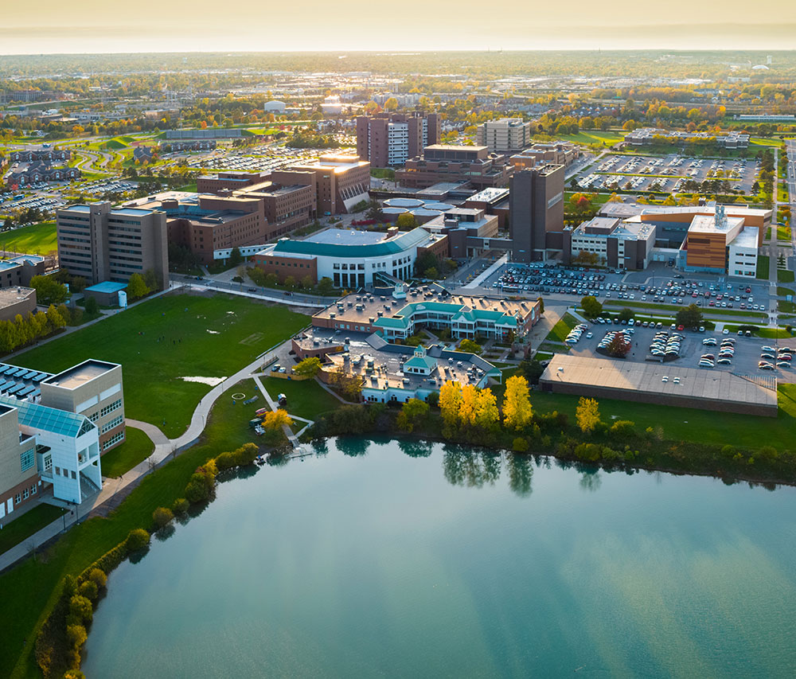
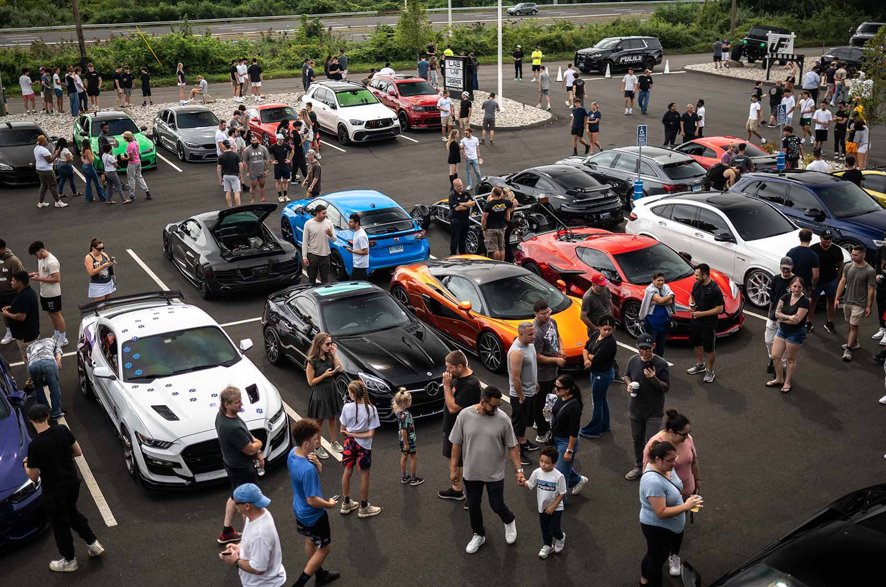
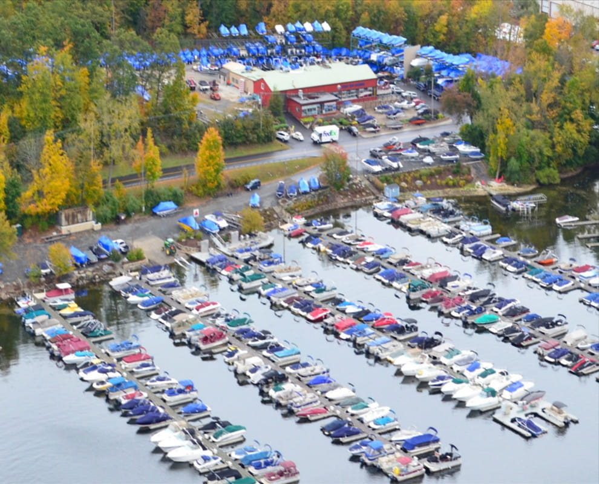

I operate a specialized, data-driven consultancy that bridges the gap between off-market real estate acquisition, professional business operations, and long-term financial asset protection. By leveraging independent brokerage structures and multi-disciplinary systems analysis, I safeguard client wealth and optimize capital transitions.

📍 Regional Market Coverage & Commercial Real Estate Data MappingConnecting motivated property sellers with active cash buyers and real estate flippers. I manage pipeline identification, transactional data mapping, and assignment coordination to secure optimal closing scenarios.
Providing custom, non-captive protection planning. By maintaining active licensing and operating free from rigid corporate alignment, I structure mortgage and estate protection strategies tailored strictly to the client's interests.
I am actively scaling my consultancy pipeline to integrate deep corporate financial tracking alongside asset risk protection. Current educational tracks include:
Outside of analytical modeling and estate strategy, I manage physical capital assets. I focus on technical mechanical evaluations, structural reconditioning, and project flips:
📷 Field Log & Active Field Operations:

Automotive Asset Evaluations & Fleet Sourcing
Echo Bay Marina — Powertrain & Hull Logistics"I like working on cars, and honestly, I love working on boats too."
I build targeted software scripts to handle data automation and physical dynamic tracking challenges:
Whether you are a real estate investor looking for off-market inventory, a family seeking a secure legacy blueprint, or looking for mechanical consulting on a machinery project, I deliver high-tier execution.
📧 Email: your.email@example.com (Update with your actual email!)
💼 LinkedIn: https://linkedin.com (Update with your link!)